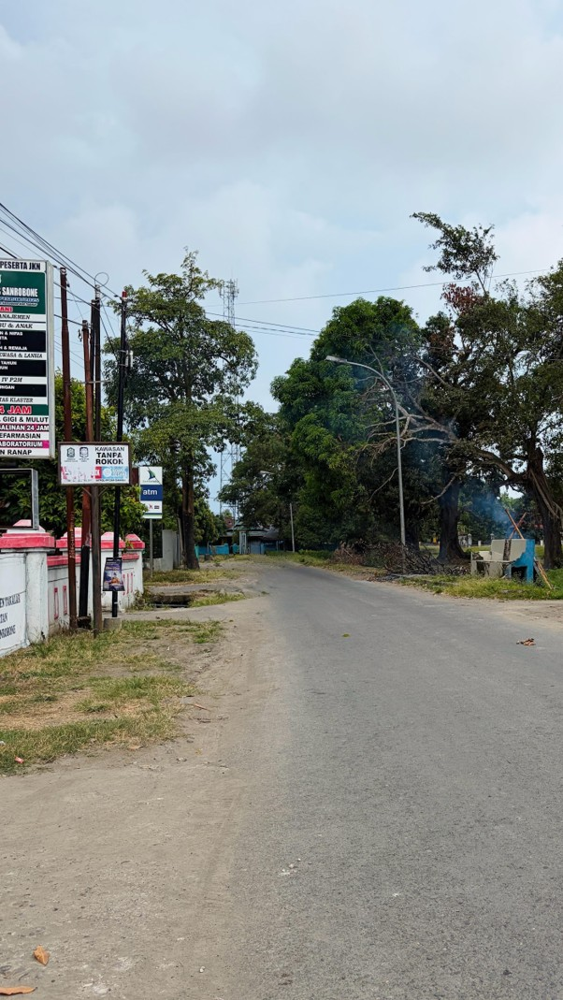
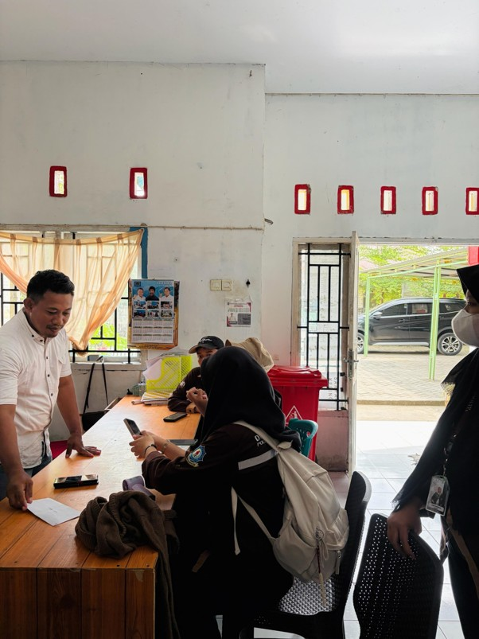
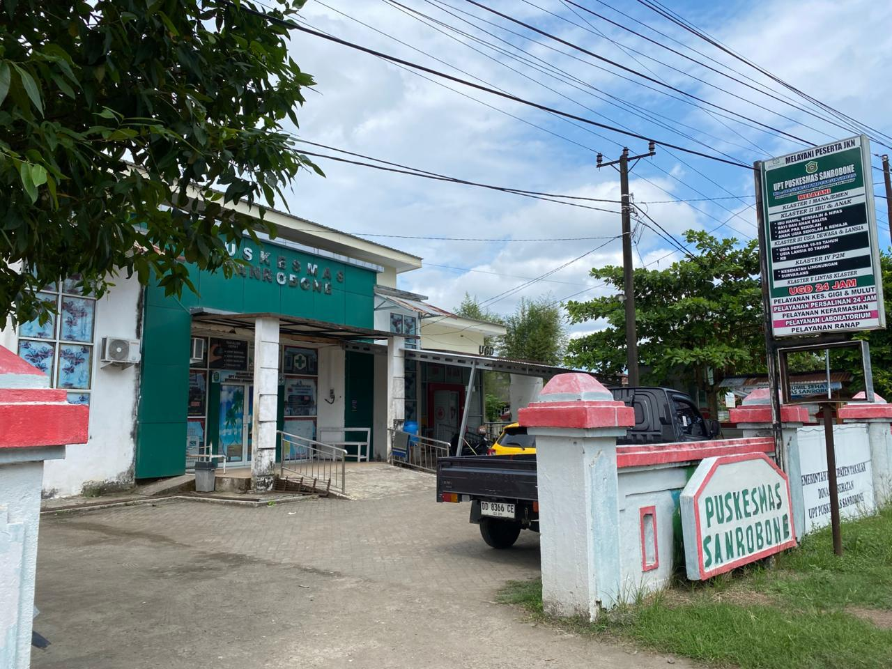
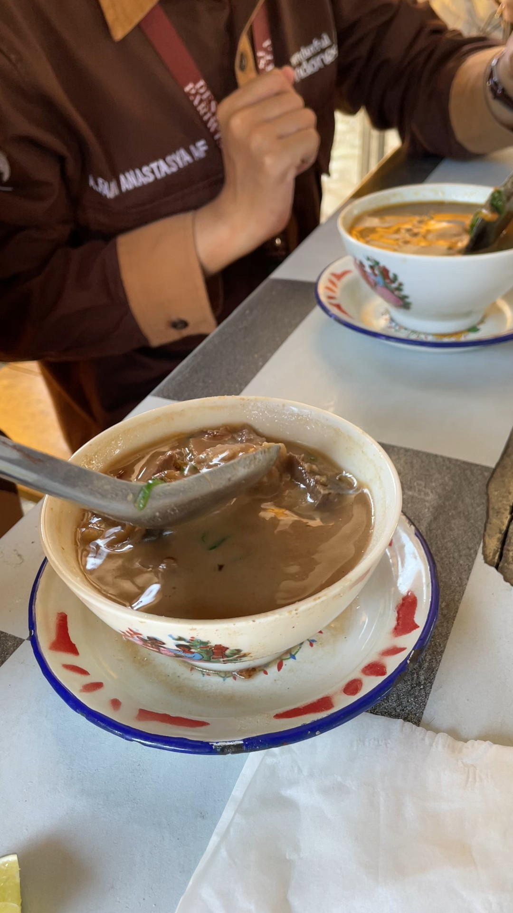

Puskesmas Sanrobone
Puskesmas Sanrobone

Akses jalan & lokasi ATM
Kantor pelayanan desa Warung makan lokal
Warung makan lokal
Berdasarkan hasil observasi lapangan, Desa Sanrobone telah memiliki sejumlah fasilitas yang menunjang kebutuhan masyarakat lokal maupun wisatawan, meskipun masih dalam kategori sederhana dan terbatas. Keberadaan fasilitas ini menunjukkan potensi besar untuk berkembang sebagai destinasi berbasis masyarakat (Community Based Tourism) apabila didukung dengan pengelolaan yang lebih optimal.
Sektor Konsumsi dan Kebutuhan Harian
Dari segi konsumsi, terdapat beberapa warung makan dan kios kecil yang menyediakan makanan serta minuman ringan bagi pengunjung. Keberadaan warung ini tidak hanya memenuhi kebutuhan wisatawan, tetapi juga menjadi sumber pendapatan tambahan bagi masyarakat setempat. Selain itu, tersedia pula toko kelontong yang menyediakan kebutuhan sehari-hari untuk memudahkan wisatawan.
Akomodasi Berbasis Masyarakat
Desa Sanrobone menyediakan homestay yang dikelola langsung oleh masyarakat. Ini merupakan bentuk partisipasi aktif warga dalam pengembangan pariwisata sekaligus memberikan pengalaman autentik bagi wisatawan untuk merasakan kehidupan sosial masyarakat lokal.
Pelayanan Kesehatan dan Keuangan
Tersedia Puskesmas yang dapat dimanfaatkan oleh masyarakat maupun wisatawan untuk layanan kesehatan dasar, yang menjadi indikator penting dalam menunjang keamanan. Selain itu, fasilitas keuangan berupa mesin ATM juga telah tersedia dan berlokasi di samping puskesmas, sehingga memudahkan wisatawan melakukan transaksi keuangan tanpa harus keluar dari wilayah desa.
Sarana Ibadah dan Fasilitas Umum
Masjid tersedia dan dapat diakses dengan mudah bagi wisatawan yang membutuhkan tempat ibadah. Fasilitas umum seperti toilet (WC umum) juga telah tersedia di dekat kantor pelayanan desa. Namun, kondisi fasilitas tersebut masih memerlukan perhatian lebih, khususnya dalam hal kebersihan, perawatan, dan pengelolaan agar memberikan kenyamanan optimal bagi pengguna.
Aksesibilitas
Aksesibilitas menuju Desa Sanrobone sudah cukup baik, di mana jalan dapat dilalui oleh kendaraan roda dua maupun roda empat. Namun, penataan fasilitas pendukung seperti area parkir masih perlu ditingkatkan agar lebih tertib dan terorganisir.
Secara keseluruhan, fasilitas yang tersedia sudah mampu mendukung aktivitas dasar wisatawan, meskipun masih terdapat keterbatasan baik dari segi jumlah maupun kualitas. Oleh karena itu, diperlukan upaya pengembangan yang terencana dan berkelanjutan, baik melalui peningkatan kualitas fasilitas yang sudah ada maupun penambahan amenitas baru.
Daftar Amenitas & Fasilitas
Sarana pendukung di sekitar kawasan Desa Wisata Sanrobone — lengkap dengan jam operasional, harga, dan titik lokasi.

Puskesmas Sanrobone
Fasilitas kesehatan utama di Desa Sanrobone yang melayani UGD dan persalinan 24 jam. Sangat penting bagi wisatawan karena menjamin layanan medis darurat dan kesehatan ibu-anak tersedia kapan saja di area wisata.
Lihat di Maps
Aula Balai Desa Sanrobone
Balai serbaguna milik desa untuk kegiatan kemasyarakatan, rapat, pelatihan, atau event desa. Dapat dimanfaatkan wisatawan untuk kegiatan kelompok/komunitas dengan izin pengelola desa.
Lihat di Maps
Masjid Tua Baitul Maqdis
Masjid bersejarah yang buka 24 jam untuk ibadah. Selain fungsi religi, masjid tua menjadi daya tarik wisata budaya/religi karena nilai sejarah dan arsitekturnya.
Lihat di Maps
Saung BUMDes Salewangang
Coto: Rp 20.000
Unit usaha BUMDes yang menyediakan kuliner khas seperti coto. Amenitas kuliner yang cocok untuk wisatawan yang ingin makan siang dengan harga terjangkau.
Lihat di Maps
Warung Mie dan Bakso Pangsit
Bakso: Rp 10.000 · Pangsit: Rp 15.000
Warung makan rakyat yang menjual bakso dan pangsit. Makanan cepat saji yang murah dan mengenyangkan untuk wisatawan harian.
Lihat di MapsATM SULSELBAR
Tersedia ATM 24 jam di Desa Sanrobone. Penting sebagai amenitas penunjang transaksi non-tunai, memudahkan wisatawan mengambil uang tunai tanpa harus keluar dari area desa wisata.
Lihat di MapsRencanakan Kunjungan Anda
Nikmati kenyamanan fasilitas Desa Wisata Sanrobone sambil menyelami kekayaan sejarah dan budayanya. Hubungi kami untuk informasi dan reservasi.
RESERVASI SEKARANG